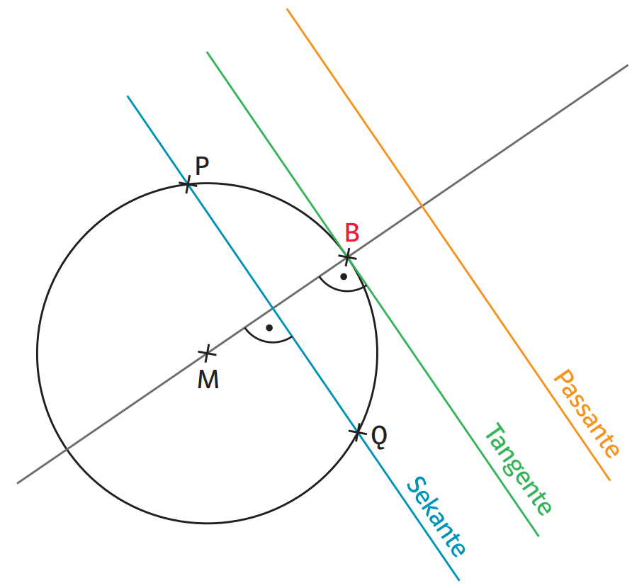

Lagebeziehung Gerade-Kreis
Lagebeziehung Gerade – Kreis (analytische Bestimmung)¶
Die Lagebeziehung zwischen einer Geraden und einem Kreis wird analytisch bestimmt, indem die Geradengleichung in die Kreisgleichung eingesetzt wird.
Dabei entsteht eine quadratische Gleichung. Die Anzahl der Lösungen sowie die berechneten Lösungen selbst bestimmen die Lagebeziehung.
Seien ein Kreis in Koordinatenform
mit Mittelpunkt \(M(p|q)\) und Radius \(r\), sowie eine Gerade \(g\) gegeben.
Vorgehensweise¶
- Die Geradengleichung wird nach einer Variablen aufgelöst.
- Der Ausdruck wird in die Kreisgleichung eingesetzt.
- Es entsteht eine quadratische Gleichung.
- Die Gleichung wird in die Normalform \(x^2+px+q=0\) gebracht.
- Lösung mit der pq-Formel: \(x_{1,2}=-\frac{p}{2}\pm\sqrt{\left(\frac{p}{2}\right)^2-q}.\)
- Die berechneten Werte werden in die Geradengleichung eingesetzt.
- Die Koordinaten der Schnittpunkte werden bestimmt.
Entscheidung über die Lagebeziehung¶
-
zwei verschiedene Lösungen → Gerade schneidet den Kreis (Sekante)
-
eine doppelte Lösung → Gerade berührt den Kreis (Tangente)
-
keine reelle Lösung → Gerade hat keinen Schnittpunkt (Passante)

Beispiel 1 — Sekante (zwei Schnittpunkte)¶
Gegeben seien
und
Einsetzen der Geradengleichung
Ausmultiplizieren
Normalform
Division durch \(2\):
Damit gilt
Anwendung der pq-Formel
Bestimmung der Schnittpunkte
liefert
Damit ergeben sich die Schnittpunkte
Die Gerade ist eine Sekante.
Beispiel 2 — Tangente (ein Schnittpunkt)¶
Gegeben seien
und
Einsetzen
Normalform
Hier gilt
pq-Formel
Da beide Lösungen denselben Abstand zum Ursprung besitzen und die Gerade den Kreis nur berührt, entsteht ein Berührpunkt.
Einsetzen in \(y=x\):
Die Gerade ist eine Tangente.
Beispiel 3 — Passante (kein Schnittpunkt)¶
Gegeben seien
und
Einsetzen
Ausmultiplizieren
Normalform
Division durch \(2\):
pq-Formel
Die Wurzel ist negativ, somit existiert keine reelle Lösung.
Die Gerade besitzt keinen Schnittpunkt mit dem Kreis. Die Gerade ist eine Passante.